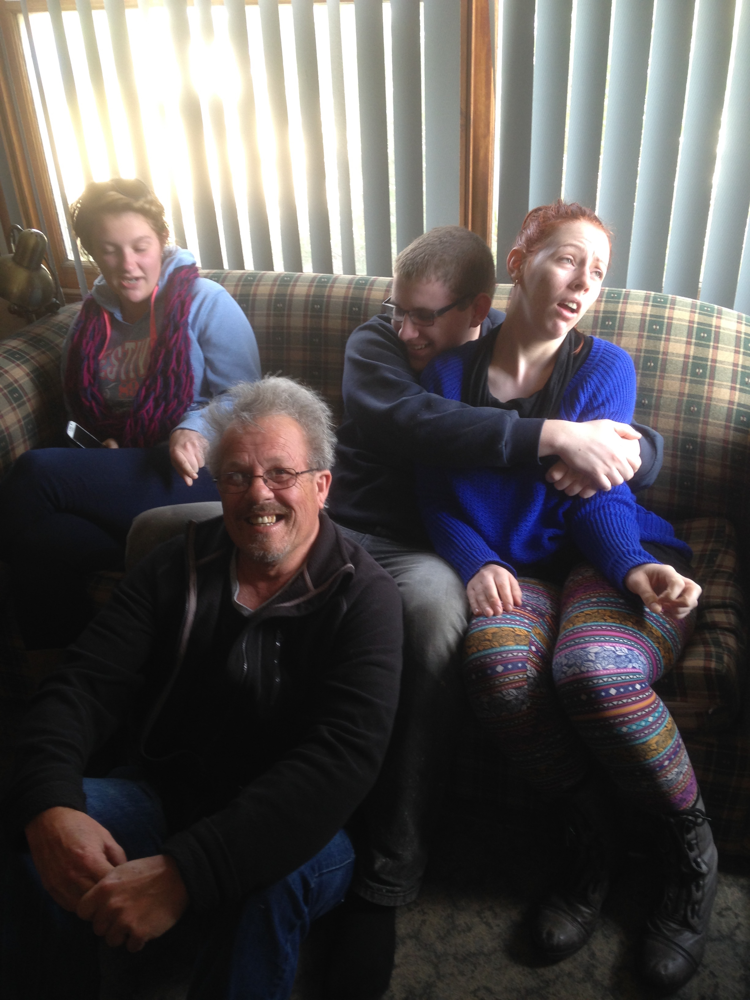
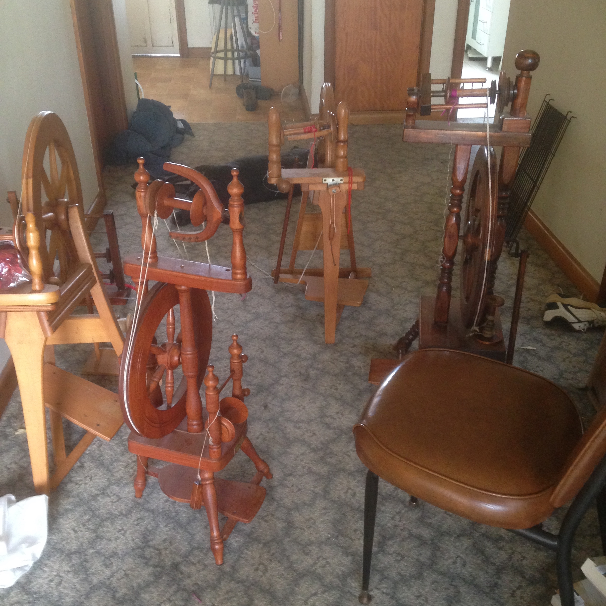
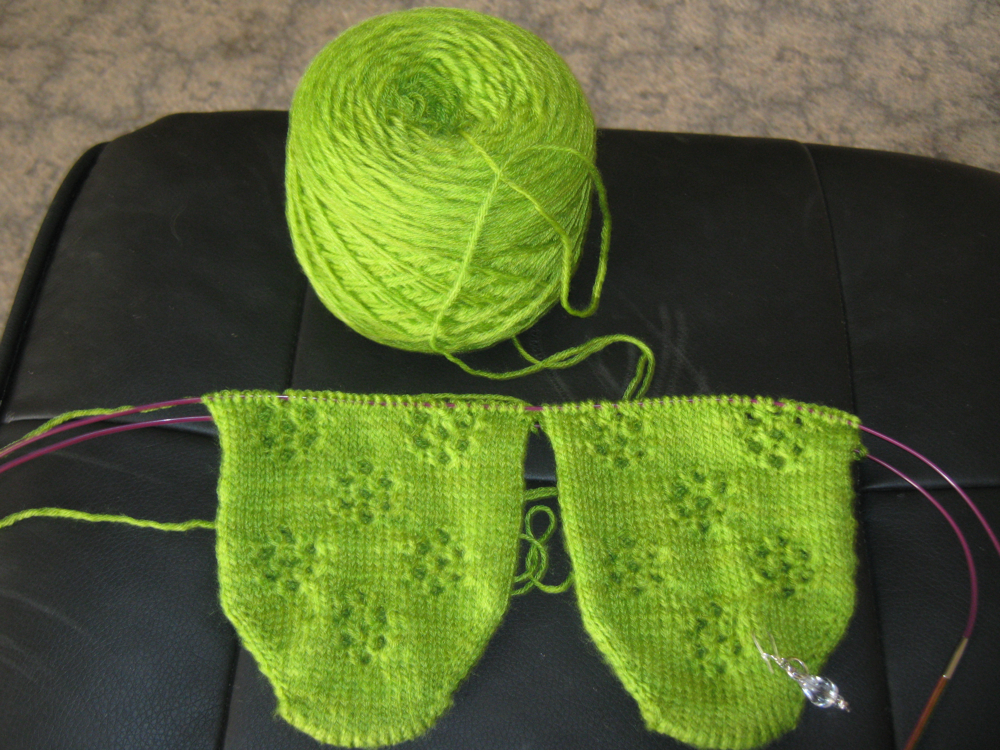
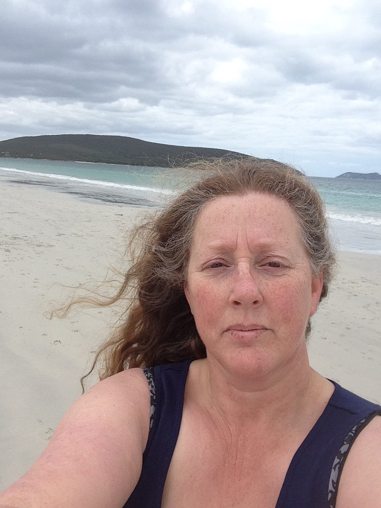

My name is Kerri Bremner. I was born in 1965 at PANCH in Melbourne; I was 54 a few weeks ago! As I kid I roamed the empty paddocks and unbuilt house blocks of Lalor and Thomastown. At that time, the late 60s and 70s, Lalor was classed as an outer suburb, and the train line stopped at Epping. I went to high school with kids who used to come to school on the school buses from the surrounding country towns of South Morang, Mernda and Whittlesea. It amazes me when I drive through those areas now because they are virtually all houses now, not farms.
I am a Open University student and I chose to do a subject on Information Technology through RMIT, the subject identifier number is COSC2196. My student number at RMIT is 3791195, which I have found to be really easy to remember. I need my student number to log into various sections of RMIT like student services and my subject information. I also need my student number to log into the University's email.
I am a mother of three grown children, all with families of their own. I have a daughter in Albany, Western Australia, with three children of her own; another daughter in Brisbane, Queensland, with a new baby daughter, and a son in Geelong, Victoria, with a wife and fur babies. I live with my best friend in the world, and we have two dogs Tess and Sasha, and a very naughty fat cat named Tom. Until recently I worked at an indigenous plant nursery in Moolap.
I have a Bachelor of Education (Secondary) Library and Information Studies attained through University of Melbourne. When I graduated I did a bit of emergency teaching but was never able to get a permanent position. So since 1990 I've had various jobs in the retail sector. I left university with a half major in Information Management and personal computers were becoming much more common.
I'm absolutely bewitched by yarn, yarn I knit with. I have four spinning wheels and practice at least half and hour a day perfecting my spinning. I think I have the best range of beanies, scarves and gloves and I often give them away as presents to friends and relatives. I would really like to be able for make a living from yarncraft but not many people are willing to pay what a beanie is actually worth.
|  |  |  |  |